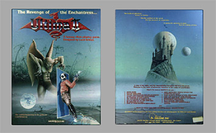
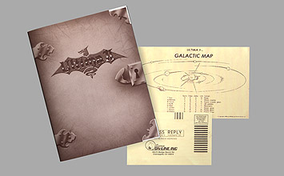
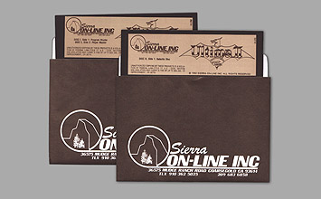

Contents
Hand Book, Galactic Map / Player Reference Card, Cloth Map (22x17" / 56x43 cm), Reg Card, 2x 5.25" FD
Year of Release
1983
Publisher
Sierra On-Line Inc.
UPC/UID
- / ULD-121
Description
In 1983 Ultima II was ported to the Atari 8 bit platform. As far as box design and content is concerned this version is pretty much identical with the Apple original (83 release). It was distributed in the same over-sized box (about 9x11.5" / 23x29 cm) and also contains the first generation type cloth map.
Availability
Images
Game Box
Documentation
Disks
Maps

Extras
Not available